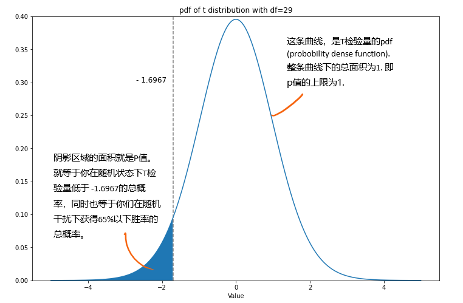

统一回复微信里问我p-value的朋友
从一个例子说起
- 什么是 P-value？
- 什么是第一类错误？
这是鄙人学统计后，在微信上回答得最多的两个问题（普及度实在太高了）
P 值和第一类错误的作用，一言以蔽之，就是“衡量结论的不确定性”。统计里最基础的显著性检验，通常会对某个参数 beta 做出假设，然后依照实际数据 x，来对假设做出拒绝或不拒绝的判断。这个过程中，重要的不是判断，而是要衡量这个判断可不可信：你从数据中观测到的，到底是某种现象，还是只是随机误差？
为什么要区分现象和随机误差？让我们举个真实的例子来说明。
你和朋友打英雄联盟，你朋友自称大师段位，80% 胜率带你飞。于是你放松身心让他带了三把。结果三把全输了。按照简单的计算，假设你朋友 80% 胜率属实，输一把的概率是 20%，那么连输三把是一个小概率事件。你心里开始产生怀疑：他是不是在吹？80% 胜率莫不是指的青铜虐菜？
但你朋友他无论如何要证明自己。于是，你们决定一起做一个显著性检验。
理论上来说，只要你们保持同一个状态打够 1000 把，那么胜率应该相当稳定。但你们肯定没办法打够 1000 把，这是由你们的时间成本和精神成本限制的。
可是在有限的局数中，战绩的波动也会比较大。在连跪三局后，你朋友告诉你，有如下几个因素导致了他发挥失常:
- 队友太坑
- 对手太强
- 手感不好
- 网不好
- 巧合，下把一定赢
也正是这些因素，导致实际胜率（0%）和期望胜率（80%）产生了差异，并且你们打的局数越少，这个差异越捉摸不定。
我们可以对这些误差因素（借口）统一做假设：这些误差的干扰都是相互独立的。第一把的手感不会延续到第二把（好的我知道它很不合理），并且每一把中干扰大小也都是相似的。我们把这个叫做误差独立同分布。
现在，你和朋友决定先打 10 把，小试牛刀。这 10 把的胜负分别如下：
胜，负，胜，胜，胜，负，负，胜，胜，负
胜率是 6/10=60%. 你一并计算了这次战绩的方差: 2.4/9=0.2667.
朋友说：不行，再来20把！
行，可以，又打了 20 把。加上之前的 10 把，最终 30 把里一共胜利 20 把，输 10 把，综合胜率是 66.7%，样本方差为 6.8/29=0.2345.
t分布和p-value
还记得我们的假设是：胜率 = 80%，与之相对即你所怀疑的，胜率小于 80%.
胜率叫“率”，它其实也是一个平均值：
平均值的检验，我们一般使用 t 分布，t 分布的详细在此不多说（懒）。我们直接计算它在原假设下的 T 值：
（结果可能存在一些计量误差）在原假设成立的情况下，它是一个均值为 0，自由度为 n-1 = 29 的 t 分布。
p值，衡量的是你得到 T = -1.6967 这个值后，在它所属的 t 分布下，有多大概率会随机抽中一个比它还要小的数。 换算到原来的问题中，p 值就是：假如你朋友真的有 80% 的胜率，在这种情况下你们有多大可能，会仅仅因为随机干扰因素，拿到一个比 65% 还要小的胜率。如果这个值很小，那么恭喜你，你的怀疑占了上风——兄弟，65% 够低了，不能再低了。
它在图上是这样一个区域：
我们计算一下这个面积，得到 P 值是 0.0502. 但是注意辽，在原假设下，仅仅靠随机性，你也可能得到任何一个 T 检验量，从而在上图中得到任何一个可能的 P 值。
在原假设成立（重点）的前提下，p 值应当是服从一个 0 到 1 的均匀分布（证明很简单），也就是说，随便抓阄都能抓到一个 p 值，并且抓到谁概率都一样。上图是一个模拟的 p 值的分布。
这就是我们常说的第一类错误。你获得了一个看起来很小的 p 值，但它也有可能出自完全的随机性。在这里，第一类错误的大小就是“原假设成立时，随机抓到 0.0502 或更小 p 值的概率”，就等于 0.0502（因为 p 值服从于均匀分布）.
脱离原假设，p 值几乎没有了意义。可是在这个显著性检验中，我们除了原假设一无所知，没有人知道真实的胜率的分布是什么样子，也就更没办法得到一个有意义的数据。这是传统 Fisher 显著性检验的一个弊端，也是 P 值饱受争议的原因（对 P 值的诟病已经是陈年话题了）
那第二类错误是什么呢？反过来，第二类错误就是，你的数据确实来自于一个显著的事实，但你错误地认为它来自于随机性。由于上一段所说的原因，如果没有一个精确的备择假设（比如你一口咬定真实胜率是60%），这个大小通常是没办法计算的。
现在，各位做题家们请听题：
显著意味着让你否定你朋友声称的 80% 胜率，不显著意味着让你按下你的怀疑。那么请问 p 值等于 0.0502，这个结果是显著还是不显著呢？
做题家A：这取决于你的 significance level（置信度）大小，如果你定在 5%，那它不显著，你要是定在 10%，那他就显著
做题家B：这取决于你们友谊的坚固程度，你们要是关系很好，我劝你还是不要显著，要是塑料兄弟，那可以显著
做题家C：我认为可以多做很多次实验，得到很多的 p 值，看看 p 值的分布
朋友：要不再来几把？
以上都是现实中会考虑到的东西。如何决定实验的置信度，实验的次数，样本数量，都是说小不小的学问。
一点讨论
有想法的朋友可能一早就提出了疑问：衡量你朋友的游戏水平，怎么能只看胜率？操作，KDA，英雄池呢？确实，我们所生活的世界是复杂的，一个简单的平均值t检验并不能表达复杂的关系。
首先是均值本身的局限性。真实的数据分布不会只是一条光滑的关于均值对称的曲线。我们检验均值，其实仅仅估算了均值和方差。从 moments 的角度来说，这波啊，我们只到了第二层（只用到了第一和第二阶 moment）。
其次，我们关心的是人事物本身，这些通常都是复杂和“高维”的。而每一个指标都只是一个数，这只是在三维世界中去瞄准一个小小的点，很难说有多大意义。（也有例外，比如你找到了宇宙的中心点）
现实中，一个完善的假设检验也会考虑不同的统计量，平均值只是其中之一。
另外，除了使用传统的这一套方法做假设检验，统计学界其实还有非常多其它的方法，比如各种 decision theory, bayesian test, nonparametric test 等等。（题外话，这学期本来选了一节 nonparametric 的课，因为实在太深奥退课了，听说现在班里加上 phd 一共只剩 5 个人。对比一下，隔壁 statistical learning 每学期都有 70 个人……）。写到这，突然深感自己知识的有限。统计这门学科，的确是非常浩渺，既有哲学的思辨，又有实证的车间。在管理学和深度学习普及的当下，大家或多或少都在追求一个“最优解”。但万事万物何止一个解呢。不妨读一读概率论，听一听老学究们从希腊字母吵到宇宙本质，从一枚硬币收敛到世界尽头，或者也别有一番宁静呢。要不我还是去读博算了吧
咳，到这里，我们完成了一个显著性检验，但仅仅只完成了一个完整 AB Test 的一小部分。
说实话，读统计一年后才第一次听到 AB Test 这个词，当时我还以为是某种 model selection testing（是 Akaike Bayesian Test 吗?）直到我看了它的维基百科，我开始迷惑了起来。这不就是初中生物课就学过的，对照试验设计吗？
（探究光照对鼠妇的影响）
开个玩笑，关于AB Test，我也还在学习当中。下次会聊聊感想。
最后说说，一个数据分析师在一个 AB Test 中的作用，显然不只是做假设检验。或许可以类比我们教授在参加完一个项目后的总结：
“那帮搞实验的，上来就给你丢一堆数据，自己也不知道想看什么，就说：你随便看看，数据里有什么发现告诉我。你忙活一番，找到了一些 pattern 拿给他，结果他回一句：要不你再看看……？”
这个其实是讲到对数据的"Insights"，从数据中发现结构性的东西，然后去找修正和解决的办法。另外，在工作中大家更看重成本和效率，因此造轮子也不可避免地成为数据分析师工作的一环。开发一套可复用的工具，来发现和解决真实的问题，并把你的发现像故事一样讲出来，大概是很多人从事数据分析的理想工作内容吧。